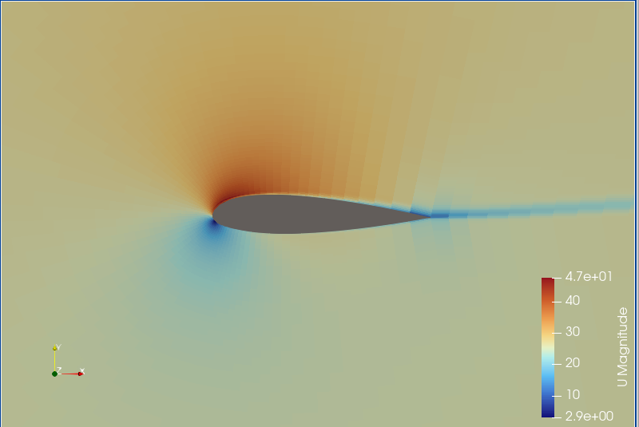
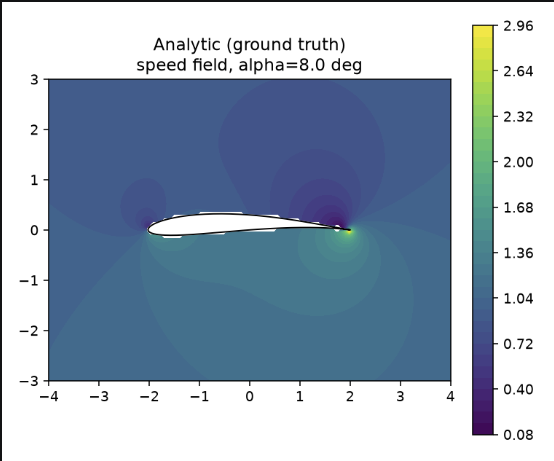
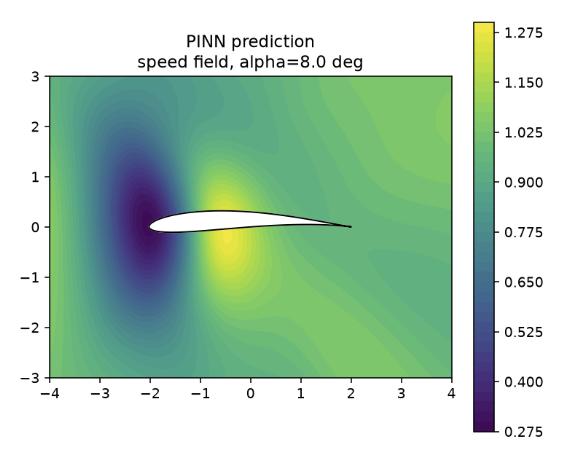
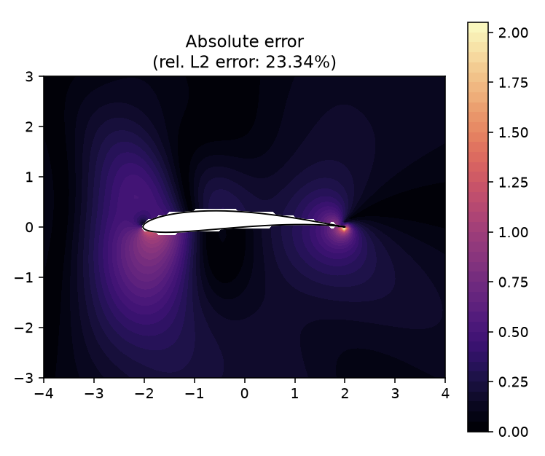

Project Overview
This project models flow around a Joukowski aerofoil using three complementary methods: a full OpenFOAM RANS simulation, an exact analytical potential flow solution, and a physics informed neural network (PINN) trained to reproduce that solution. The goal was to test whether a PINN can act as a fast surrogate for CFD, including whether it generalises to an angle of attack it was never trained on, as a stepping stone toward ML-based aerodynamic modelling.
Tools & Technologies
OpenFOAM (incompressible RANS solver, Spalart-Allmaras turbulence model), ParaView, Python, PyTorch (automatic differentiation for physics-informed loss terms), NumPy, Matplotlib
What I Did
I set up and ran a 2D RANS simulation of flow over the aerofoil in OpenFOAM, including mesh generation, boundary condition specification and residual convergence checks. Separately, I derived an exact analytical solution for potential flow around the Joukowski aerofoil using conformal mapping, providing a ground truth that could be sampled anywhere in the flow field without meshing. I then developed a PINN to predict velocity potential as a function of position and angle of attack, with velocity recovered through automatic differentiation so the predicted flow is incompressible by construction. The network was trained on angles of attack of -5°, 0°, 5°, 10° and 15°, and evaluated on a held-out angle of 8° that it never saw during training, to assess whether it had learned the underlying physics rather than memorised the training data. The held-out prediction achieved a relative error of approximately 23%, which was used to identify where the model performs least accurately (close to the aerofoil surface) and to inform directions for further improvement.
Results & Analysis
OpenFOAM RANS Simulation

Velocity magnitude contours showing flow behaviour and wake development around the aerofoil.
Analytical Solution vs PINN Prediction
Analytical Solution

Analytical reference flow field.
PINN Prediction

PINN prediction at the held-out 8° angle.
Absolute Error

The held-out PINN prediction achieved approximately 23% relative error. The largest discrepancies were observed near the aerofoil surface.
Key Learnings
This project deepened my understanding of computational aerodynamics, from mesh generation and convergence behaviour in OpenFOAM to the assumptions underlying potential-flow theory. Building the PINN gave me a concrete sense of how physics-informed losses can be used to constrain a network’s predictions, and the 23% held-out error was a useful lesson in where that approach currently falls short, particularly near the aerofoil surface where velocity gradients are steepest. It also clarified the gap between this inviscid, 2D formulation and the viscous, turbulent, 3D flows relevant to real aerodynamic design, which is the natural next step for this work.